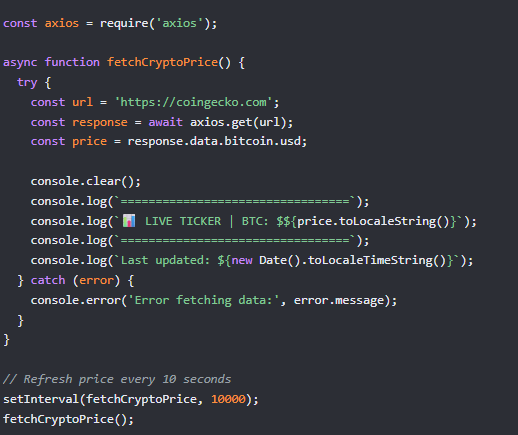

Node.js / API
Live Crypto Price Ticker
A small Node.js script that polls a live price API for Bitcoin's current value every ten seconds using axios, then clears and redraws the terminal with a formatted ticker line and a last updated timestamp. It is a simple project on the surface, but it covers async/await, error handling around a network call, and working with setInterval to keep data fresh without the user doing anything.
View repository (simulated link) →